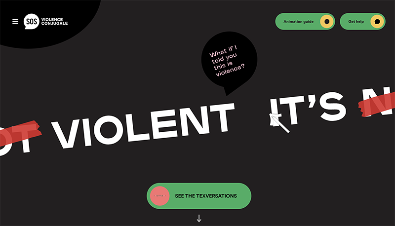

It's Not Violent
What I really appreciate about this website, besides its ability to present important information about domestic violence in a clear, organized, and interactive way is the use of the sans-serif typefaces Plaak Ney and Circular Std, which are clean, modern, and legible at small sizes. The typographic hierarchy, i.e. the bold Plaak Ney paired with regular Circular Std is very visually appealing. I also really like the consistent use of the pink, yellow, green, and black colour palette, which paired with the playful icons adds some interest aesthetically and presents the this important, but sometimes heavy information in a less intense way. I also really like the way the links are organized with the hovering characters and how the user can choose the reply in the text conversations.